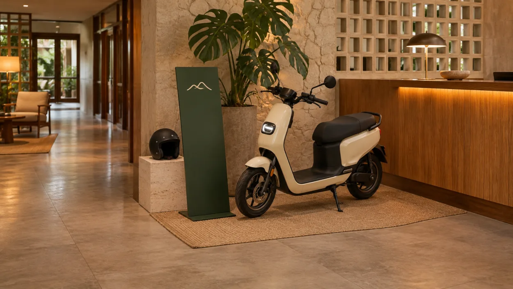

Para hotéis, pousadas e comércios
Um ponto Curva Alta no seu espaço.
A Curva Alta investe nos equipamentos e no quiosque. O estabelecimento oferece o espaço, sem aporte inicial, e recebe a comissão combinada nas locações pagas.
Preparar visita ao pontoO que combinar na visita
O percentual, as despesas locais e a frequência dos repasses são negociados para cada endereço.
Ver a experiência do hóspedePauta do ponto
- Escolher a área de exposição, a guarda dos equipamentos e a recarga.
- Definir horário, suporte e o papel da recepção na retirada.
- Combinar a comissão, os estornos e quem paga energia, limpeza e equipe local.